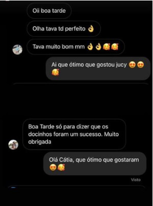
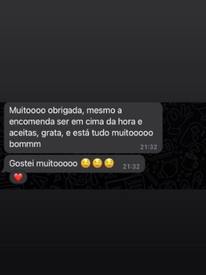
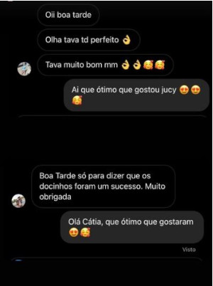
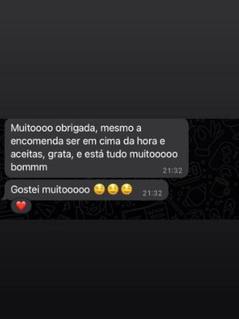

Como tudo começou.
Antes de mais nada, apresentações.
Eu sou a Gabriele, sou casada com o João e temos um lindo presente de Deus chamado Pedro, juntos somos donos do Caseirinhos.
Quando viemos do Brasil estavamos procurando um lugar com tranquilidade, beleza e segurança e achamos Portugal, um lugar de rica tradição, beleza e tranquilidade, e assim cá virou nosso lar.
O Caseirinhos foi uma ideia a partir de um acontecimento, nosso filho, pois quando o Pedro nasceu sabiamos que não teriamos tempo devido ao trabalho, então por que não trabalhar de casa?
Foi ai que trouxemos um pouco da nossa cultura, através da nossa culinaria Brasileira e colocamos um pouco do nosso amor e fazendo cada encomenda com carinho, atenção e de forma 100% caseira, e o resultado você já sabe, foi amor a primeira mordida.
Nosso trabalho é a sua felicidade.
Temos que concordar que fazer uma festa dá trabalho imagina então preparar as comidas?
Foi pensando exatamente nisso que o Caseirinho surgiu, em facilitar um momento tão importante para nossos clientes, suas comemorações, festas de anos, batizados ou qualquer outro evento que seja importante, ou até mesmo um momento de gula para comer coisas gostosas.
O que os clientes estão falando?

- 


- 


Não perca tempo!
- 
- 
Se sua festa já tem data marcada, ou se quer comer um monte de gostosuras para relaxar, pegue no telemovel e não exite em nos chamar.
Para entrar em contato conosco é só clicar no botão do WhatsApp que está no canto inferior direito da tela que será redirecionado para uma conversa conosco, ou pode clicar no botão abaixo do Instagram e nos mandar um direct, não perca tempo!

.png)